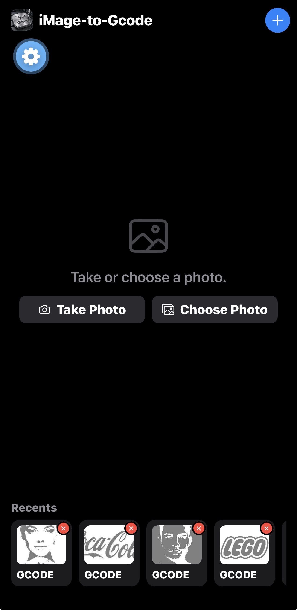
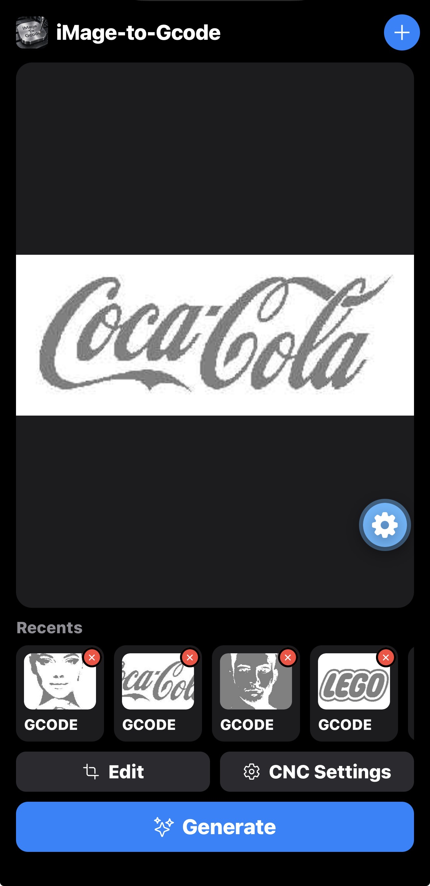
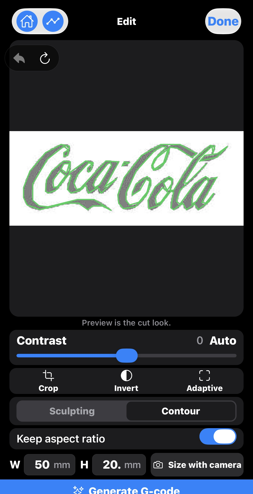
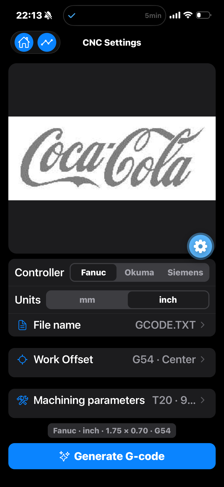
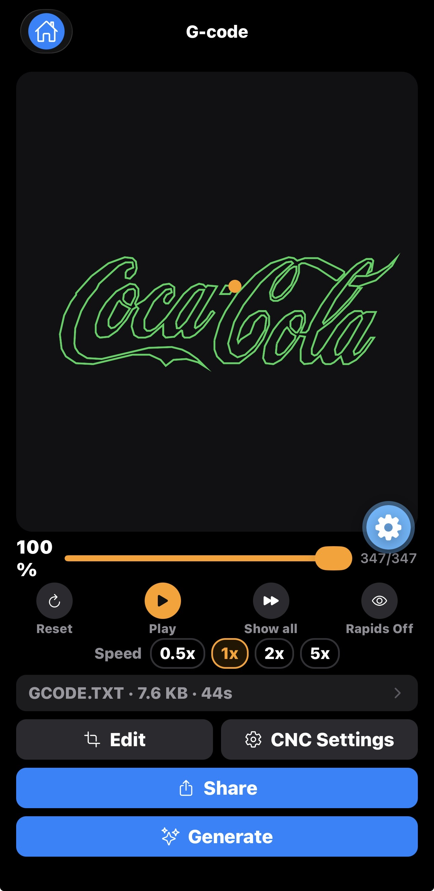
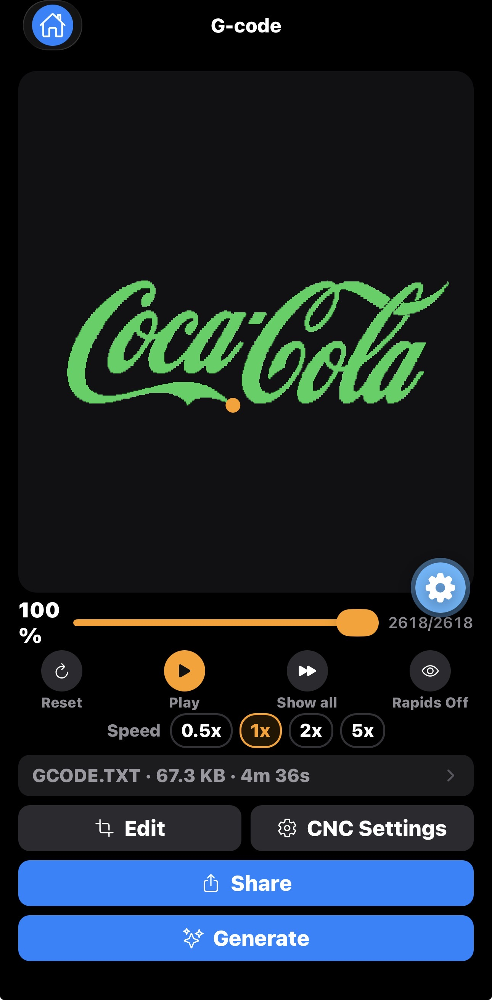

CNC · Photo · G-code
Photo in. Toolpath out.
iMage-to-Gcode turns a picture into CNC G-code on your phone — prepare the
image, generate the path, preview the cut, then share the file. Built for
shops and makers who want a fast, private workflow.
How it works
Four clear steps. No account required.
01 · Capture
Take or choose a photo
Camera or library — logos, sketches, or part photos.
02 · Prepare
Fit the job
Crop, contrast, invert, and set workpiece size.
03 · Generate
Build G-code
Sculpting for relief, Contour for outlines — then preview.
04 · Share
Send the file
Share only when you choose — Files, Drive, AirDrop, or email.
How it looks
Real screens. Under each one — what every control does, in plain words.

Home
Start here: new photo or a past job.
+ New job — clear the workspace for another photo.
Settings (gear) App options. Not the everyday CNC knobs.
Take Photo Open the camera and snap a logo, sketch, or part.
Choose Photo Pick from your library.
Recents Tap a card to reopen that job.
Delete × Remove that recent only — not your camera roll.

Photo loaded
Image ready — edit, set the machine, or generate.
+ Start another job with a new photo.
Gear on photo Shortcut into CNC settings for this job.
Edit Contrast, crop, invert, size, Contour or Sculpting.
CNC Settings Control type, units, offsets, tool setup.
Generate Build G-code and open the path preview.

Edit · Contour
Green lines are the cut look.
Home Back to main. Edits stay in the project.
Simulation Open the last G-code preview (dim if none).
Done Leave Edit and keep this prep.
Undo / Reset Step back one change, or wipe edits on this photo.
Contrast + Auto Separate ink from background; Auto picks a start.
Crop Frame the job; rotate 90° or straighten a little.
Invert Flip light and dark.
Adaptive On = smarter local edges; off = previous look.
Sculpting / Contour Relief carve vs outline trace.
Size + camera Real W/H (keep aspect); camera helps match a part.
Generate G-code Build the program and open the simulator.

CNC Settings
Match the file to your control.
Home Return to the main screen.
Simulation Open the last preview without regenerating.
Fanuc / Okuma / Siemens Dialect for your machine.
mm / inch Units for sizes and coordinates.
File · Offset · Tool Output name, work offset (e.g. G54), tool/feed summary.
Generate G-code Write the file with these settings.

G-code preview
Watch the path before you cut.
Home Leave the simulator.
Progress Scrub the program; orange dot = tool now.
Reset Jump to the first move.
Play Run the path in G-code order.
Show all Draw the full path at once.
Rapids Off Hide non-cutting moves.
0.5× / 1× / 2× / 5× Playback speed — study slow, skim fast.
Edit Tweak the image, then generate again.
CNC Settings Change control/units/offsets and regenerate.
Share Send the file only when you choose where.
Generate Rebuild G-code with current settings.

Bigger jobs
Same controls — longer programs.
Speed presets 5× skims a long path; 0.5× checks a tight corner.
Line counter e.g. 2618/2618 — where you are in the file.
File · size · time Name, bytes, rough run-time before the machine.
Share Leaves the phone only after you tap Share.
Two cut styles
Match the path to the job. Switch and generate again anytime.
Sculpting
Carve the picture
Best for reliefs and engraved plates — the image becomes the surface.
Contour
Trace the outlines
Best when edges matter — the tool follows the shapes in the photo.
Why makers use it
Private by design
Photos and projects stay on your device. Nothing uploads unless you Share.
Recents on hand
Reopen past jobs, replay the preview, or share again. Delete anytime.
Read the Privacy Policy or
contact support — iMagetoGcode@Gmail.com.
FAQ
Do I need an account?
No. Core use works without sign-in.
Is the preview safe to run?
Preview is a guide. Always prove the path on the machine before cutting.